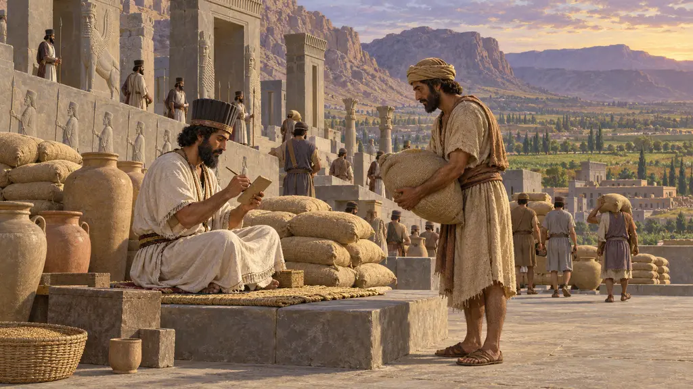
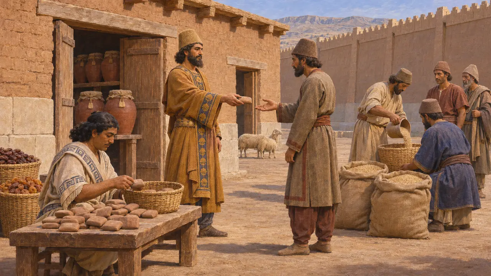
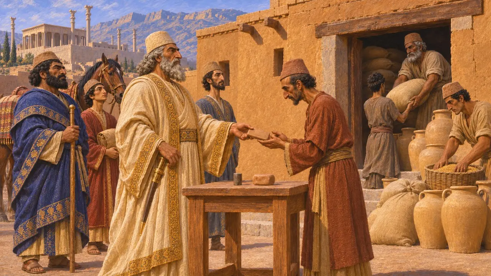
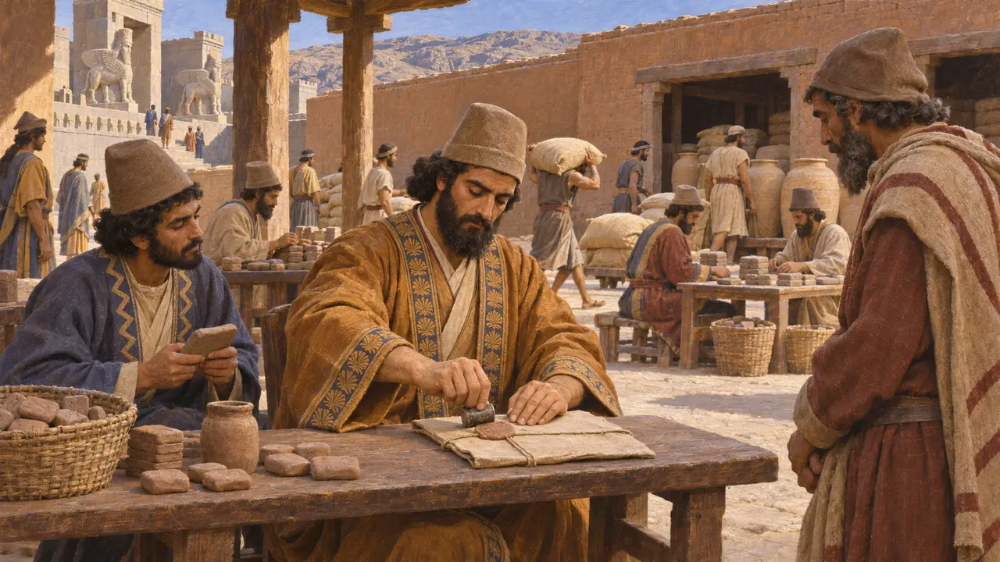
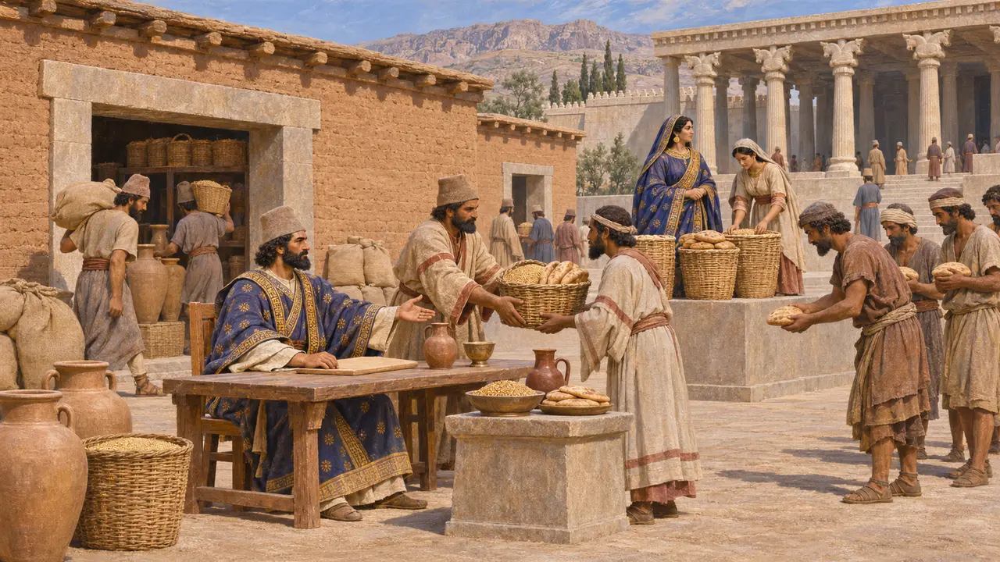
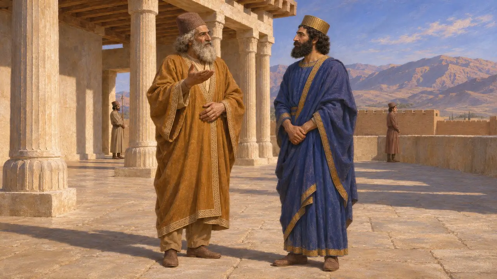

The director of the King's economy
Head of the royal food and labour administration at Persepolis, about 506-497 BCE
In the game: Level 4: The Terrace
The Persepolis Fortification tablets show a network that fed workers, travellers, officials and gods across Persis and towards Elam. From about 506 to 497 BCE it was run by Parnaka, with Ziššawiš as his deputy. Their sealed letters show how a Persian king turned stored grain, wine and livestock into labour for building and farming.
In the game: The game shows Parnaka and Ziššawiš running rations and workers, which is broadly right. The tablets date their work to about 506-497 BCE, well after the Parsa level of 521 BCE, and they acted through scribes and storekeepers.

What the Fortification tablets show
In the recordThousands of clay tablets, mostly in Elamite, were found in the fortification wall at Persepolis in the 1930s. They date from 509 to 493 BCE and record the issue of barley, flour, wine, beer, fruit and animals to work groups, travellers, officials and offerings for the gods. Many issues rested on written orders from the head of the system, and most surviving letter-orders were sent by Parnaka or Ziššawiš.
R. T. Hallock, Persepolis Fortification Tablets, 1969

Parnaka, son of Aršam
In the recordParnaka sent letters ordering storehouse officials to release supplies, and he moved between places in the region with his retinue. The tablets record large daily rations for him and his household, a sign of very high rank. His first seal, PFS 9*, was replaced in 500 BCE by PFS 16*, and letters told officials that the old seal was no longer his.
R. T. Hallock, Persepolis Fortification Tablets, 1969

Ziššawiš, the deputy
In the recordZiššawiš issued orders much like Parnaka's, using his own seal, PFS 83*. He seems to have acted when Parnaka was away or busy, which kept supplies moving across a wide region. The pair worked through a large staff of scribes, storekeepers and accountants who drew up memoranda, journals and yearly accounts.
W. Henkelman, The Other Gods Who Are, 2008

Feeding gods as well as workers
In the recordThe same administration that paid masons and farm hands also supplied offerings for many gods: Persian, Elamite and others. Parnaka's office approved these issues alongside ordinary rations. Royal women such as Irdabama and Irtaštuna had their own estates and workers inside the system, so the King's economy reached well beyond the court.
W. Henkelman, The Other Gods Who Are, 2008

Title and family
DisputedThe tablets give Parnaka no formal title; director of the economy is a modern label. If his father Aršam is the Arsames named by Darius as his grandfather, Parnaka was Darius's uncle, which most historians accept but cannot prove. Some identify him with the Pharnaces whom Herodotus names as father of Artabazus, the general of 480-479 BCE, but the name was common.
P. Briant, From Cyrus to Alexander, 2002; Herodotus 7.66
Sources
- R. T. Hallock, Persepolis Fortification Tablets, 1969
- W. Henkelman, The Other Gods Who Are, 2008
- P. Briant, From Cyrus to Alexander, 2002
- M. B. Garrison and M. C. Root, Seals on the Persepolis Fortification Tablets I, 2001
- Herodotus 7.66